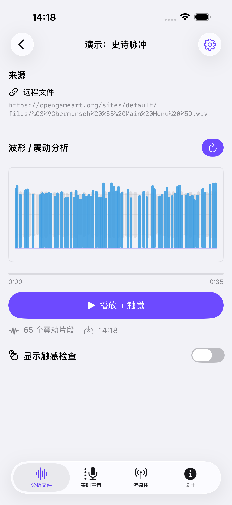
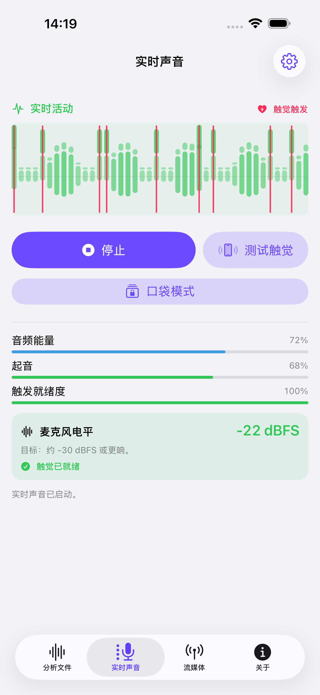
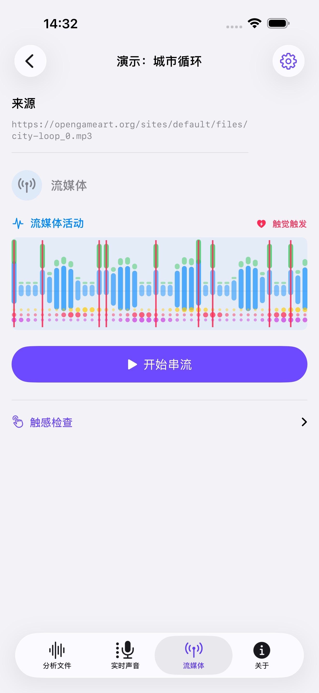
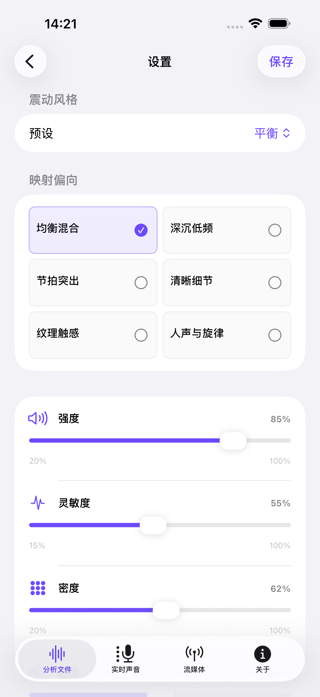

01
Audio- und Videodateien
Importiere eine Datei oder teste eine integrierte Demo. Einmal analysieren, das Ergebnis speichern und den Rhythmus mit synchroner Haptik erneut abspielen.
Den Beat nicht nur hören. Auch fühlen.
Spüre Beats und Bass als Vibrationen auf dem iPhone. Mit Audio- und Videodateien, Geräuschen in deiner Nähe oder kompatiblen Streams.

Vom Klang über die Wellenform zur Berührung
Importiere eine Datei oder teste eine integrierte Demo. Einmal analysieren, das Ergebnis speichern und den Rhythmus mit synchroner Haptik erneut abspielen.
Das Mikrofon erfasst Musik und Geräusche in deiner Nähe und setzt ihre Energie in haptische Impulse in Echtzeit um.

Spiele eine kompatible direkte Audio- oder Video-URL ab und fühle den Rhythmus. HLS unterstützt derzeit nur die Wiedergabe.

App-Ansichten auf vereinfachtem Chinesisch. Live- und Stream-Aktivität mit Demodaten.
Wähle Tiefer Bass, Beat-Fokus oder ein anderes Preset. Passe Intensität, Empfindlichkeit und Dichte an. Gespeicherte Ergebnisse behalten ihre eigenen Einstellungen.
Passende Einstellungen finden
Haptik erfordert ein kompatibles iPhone. Prüfe das Gefühl auf deinem Gerät mit einer integrierten Demo und der Funktion zum Testen der Haptik.
Echtzeit-Haptik funktioniert mit kompatiblen direkten Audio- und Video-URLs. Manche Quellen lassen sich abspielen, stellen aber keine dekodierten Audiodaten bereit. Die App zeigt dann an, dass die Live-Analyse nicht verfügbar ist. HLS-Streams unterstützen derzeit nur die Wiedergabe, keine haptische Live-Analyse. Geschützte Streams von Musikdiensten werden nicht unterstützt.
TactiBeat ist kein Medizinprodukt und ersetzt keine Hörgeräte, Cochlea-Implantate, klinische Behandlung oder professionelle Beratung.